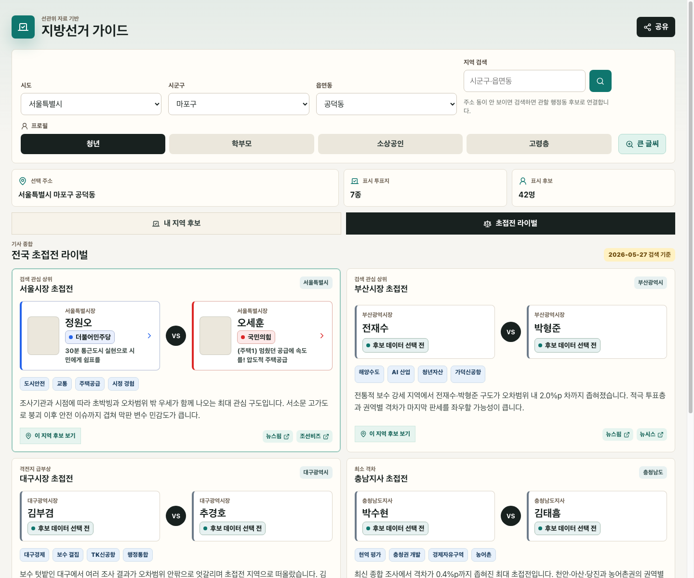
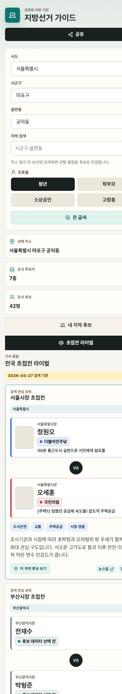

관심 라이벌 기능 확인 리포트
기존 후보 목록과 분리된 초접전 라이벌 탭을 추가했습니다. 2026-05-27 인터넷 기사 종합 기준으로 서울·부산·대구·충남·충북의 후보 2명 라이벌 구도를 한 화면에서 비교합니다.
구현 내용
내 지역 후보와초접전 라이벌을 별도 탭으로 분리했습니다.?view=rivalries로 직접 진입하면 라이벌 탭이 선택되도록 URL 상태를 연결했습니다.src/hotRivalries.ts에 서울·부산·대구·충남·충북 접전 대진과 기사 근거를 추가했습니다.- 라이벌 후보를 누르면 기존 후보 상세 공약 패널이 열립니다.
- 선택 지역이 아닌 접전 카드는 후보명 중심으로 보여주고, 해당 지역 후보 보기 버튼을 제공합니다.
검색 근거
- 종합: 뉴스핌 전국 7개 지역 광역 판세 종합
- 서울: 뉴스핌 서울시장 정원오 vs 오세훈 보도, 조선비즈 초접전 보도
- 부산: 뉴스핌 부산시장 전재수 vs 박형준 보도, 뉴시스 주요 격전지 판세 보도
- 대구: MBC 김부겸 vs 추경호 접전 보도, 경향신문 대구 초접전 분석
- 충남·충북: 뉴스핌 전국 판세 종합 기사 기준으로 각각 박수현 vs 김태흠, 신용한 vs 김영환을 반영했습니다.
뉴스 종합 판단
- 부산·충남은 최신 종합 기사에서 가장 명확한 초접전 권역입니다. 특히 충남은 0.4%p 차로 투표율 변동성이 큽니다.
- 대구·충북은 오차범위 내 접전으로 분류했습니다. 대구는 보수 결집과 지역경제 이슈, 충북은 현역 평가와 청주권 표심이 핵심입니다.
- 서울은 최신 뉴스핌 조사만 보면 오차범위 밖 우세지만, 뉴시스·조선비즈 등 다른 기사에서 초박빙 흐름이 확인돼 관심 라이벌로 유지했습니다.
검증 결과
npx vitest run src/App.hotRivalries.test.tsx통과npm test통과: 12개 파일, 77개 테스트npm run build통과: data build, TypeScript, Vite production build- Headless Chrome 데스크톱/모바일 캡처 확인
- CDP 확인:
?view=rivalries에서 초접전 라이벌 탭 선택, 대구·충북 카드 렌더링, 모바일 가로 오버플로 없음
화면 캡처

